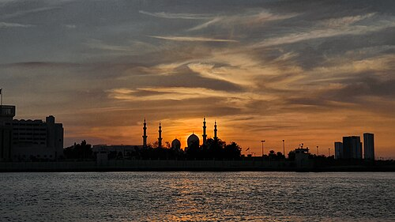
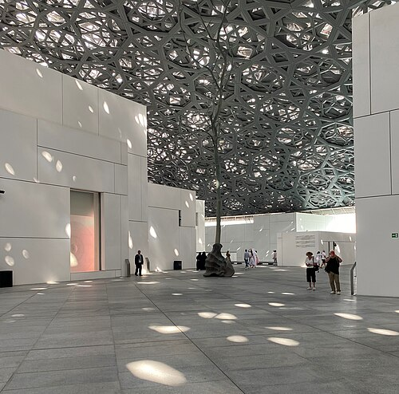
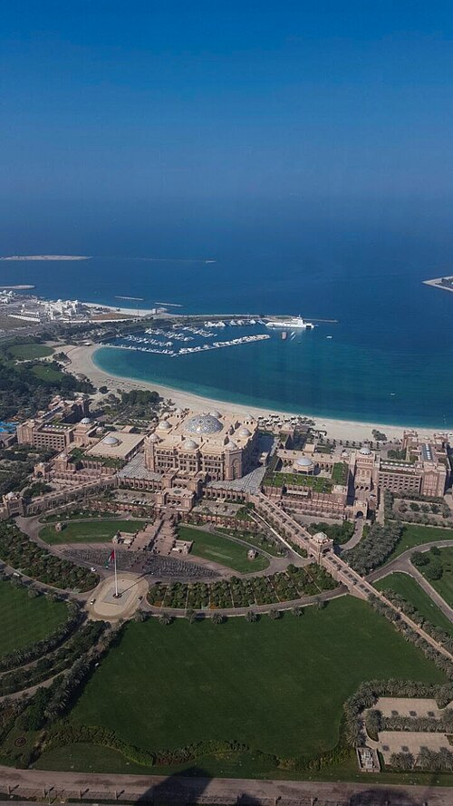

This map shows 11 of the most-searched sights in Abu Dhabi as photo spots, ranked by how often people search for them: Grand Mosque, Louvre Abu Dhabi, Emirates Palace, Qasr Al Watan and Etihad Towers lead the list. Every spot has a pin on the subject and a phone icon showing where to stand, with tips for shooting it on your phone: which lens to use, how to frame it, a settings tip and the best time of day. Directions and Navigate buttons take you to the standing point on foot or by public transport. 3 spots are free to view; the full map is for members.
The 3 free photo spots
1Sheikh Zayed Grand Mosque

The Sheikh Zayed Grand Mosque is the largest mosque in the United Arab Emirates. It was built between 1994 and 2007 and opened in December 2007. It has 82 domes and four minarets of about 107 m. The marble courtyard, with its floral inlay, covers about 17,000 square metres. White marble, long pools and repeating arches make it very easy to photograph.
This map's view is from Wahat Al Karama, a memorial park across the motorway from the mosque. The central circular reflecting pool is the foreground. When the water is calm, the domes and minarets are mirrored in it, with the memorial plaza around you. Guides often name it as the classic panoramic and reflection view from outside the mosque. The mosque is lit at night, and its lighting is designed to follow the phases of the moon. That makes the evening hours especially rewarding.
Arrive early. One guide suggests about two hours before sunset if you want a good spot for blue hour. Another says 30 minutes before sunset works for both daylight and lit-up shots. Haze is common in Abu Dhabi, so a slightly soft skyline is normal.
If you also go inside the mosque grounds, two further views are worth trying. One is the dome and minarets reflected in the long water channel of the main courtyard. The other is the minarets and archways in the pools near the entrance, with a blue-hour sky behind.
Where it is: In Abu Dhabi city. The viewpoint is in Wahat Al Karama, a memorial park and plaza on the opposite side of a busy motorway from the Sheikh Zayed Grand Mosque.
Shooting it on your phone
Lens: Start with the ultra-wide (0.5x) to take in the whole pool, the plaza and the mosque. Then switch to the default lens (1x) for a cleaner view. Use the telephoto/zoom (2x-5x, depending on your phone) to bring the domes and minarets closer, because the mosque is some way off across the road.
Where to stand: Stand in Wahat Al Karama (central circular reflecting pool in the memorial plaza, across the motorway from the mosque). The mosque's domes and minarets mirrored in the central pool, with the memorial plaza as a foreground.
Framing: Crouch and hold your phone low, just above the water edge, so the reflection fills the lower half of the picture. Turn on gridlines and place the horizon on the middle line so the mosque and its mirror image balance. For a second version, try the same view with the plaza paving as a foreground. If you go into the mosque grounds afterwards, the long courtyard channel and the entrance pools give straight-on reflections of the domes and minarets.
Settings tip: Tap the mosque to set focus, then slide the exposure down a little so the white marble keeps its detail. Wait for the water to settle before you shoot. At dusk, use night mode and keep your elbows tucked in to avoid blur. Try panorama for the full width, moving slowly and steadily.
Best time: Arrive about two hours before sunset to claim a spot for blue hour. One guide says 30 minutes before sunset works for both daylight and lit-up views. Haze is common, so clearer evenings give crisper reflections.
2Louvre Abu Dhabi

The Louvre Abu Dhabi is an art museum on Saadiyat Island, designed by the architect Jean Nouvel. Its big white dome, which weighs about 7,000 tonnes and rests on four concrete pillars, seems to float over the buildings and the water beneath it. That makes the museum easy to photograph, because the dome gives the picture a strong shape. The museum covers roughly 24,000 square metres, with about 8,000 square metres of galleries, and it is the largest art museum on the Arabian Peninsula. It can use the Louvre name until 2047 under an agreement between the UAE and France signed in 2007.
From here you can put the cafe terrace in the foreground, with the dome and the waterfront behind it. It is a calmer spot than the crowded area under the dome. Keep the museum in the top half of the frame and let the terrace tables and chairs add a bit of depth.
If you want a second picture, the area under the dome gives a very different shot. Sunlight falls through the lattice onto the courtyard floor and water channels, and there is also a raised platform at the water's edge where a person can pose against the white dome and the sea. Check the official site before you go for what is open and what needs a ticket.
Where it is: On Saadiyat Island, part of the Saadiyat Cultural District in Abu Dhabi, on the waterfront by the museum.
Shooting it on your phone
Lens: Start with the ultra-wide (0.5x) so the terrace, the dome and the waterfront all fit in one frame. Then switch to the default lens (1x) for a cleaner view of the museum. If your phone has a telephoto (2x-5x), use it for a tighter picture of the dome and its pattern.
Where to stand: Stand at Aptitude Cafe (outdoor seating area, facing the museum). The museum's dome and the waterfront in the background, with the cafe's terrace in the foreground.
Framing: Turn on the gridlines and place the dome on the upper line, with the terrace filling the lower third. Keep the horizon level. For something different, the lattice dome overhead and the platform at the water's edge, where someone stands against the white dome and blue sea, make good alternative shots.
Settings tip: Tap on the dome to focus, then slide the exposure down a little so the white stays bright and detailed instead of washing out against the sky. If you take a picture of a person on the terrace, use portrait mode.
Best time: Late afternoon usually gives softer light on the dome, but check the light on the day, as it changes with the season.
3Emirates Palace

Emirates Palace is a large luxury hotel on Abu Dhabi's western Corniche, now run as the Emirates Palace Mandarin Oriental. It is built in a sandy, desert-inspired colour. It has a central patterned dome and 114 smaller domes, which give the roofline a rhythm that suits a phone camera. The design is strongly symmetrical, so even a quick, straight-on shot looks tidy. The hotel opened in 2005 and has a 1.3 km beach of its own. That beach is private, so the public view is the one to use.
The suggested photo is from Corniche Beach, the public beach. From the eastern section you get a wide skyline view. It takes in the hotel, Etihad Towers and the city's business-district towers, all reflected in the Gulf water. The hotel is some way off along the shore, so it will look small at the default lens (1x). Use the zoom if you want it to be the main subject.
If you go up to the hotel itself, the front is the classic shot. It shows the domed facade with the entrance fountains and the palm-lined approach. Inside, the gold detailing, chandeliers and grand staircase make a quieter shot. Dress modestly, with knees and shoulders covered. Keep it handheld and quick, as security staff pay close attention to photographers. Rules can change, so check the official site before you go.
Where it is: Emirates Palace stands on West Corniche Road on Abu Dhabi's waterfront, facing the Gulf. The suggested viewpoint is on the public Corniche Beach, further along the shoreline.
Shooting it on your phone
Lens: Start with the default lens (1x) for the full skyline and water reflections. Then switch to telephoto (2x-5x, depending on your phone) to bring the hotel closer. Use the ultra-wide (0.5x) only if you are at the hotel's entrance and want the whole facade in one frame.
Where to stand: Stand in Corniche Beach (eastern section of the beach, looking east toward the hotel). A wide skyline view with the hotel, Etihad Towers and the central business district towers reflected in the Gulf water. The hotel lies to the south-west across the shoreline.
Framing: Turn on gridlines and place the water along the lower third, with the skyline above it. Keep the horizon level so the reflections look natural. If you walk to the hotel itself, an alternative is a straight-on shot of the domed facade, with the fountains and palm-lined approach leading the eye in. Inside, a shot of the gold detail or the staircase works well for a quieter picture.
Settings tip: Tap the brightest part of the sky or the towers to focus, then slide the exposure down a little so the reflections keep their colour. Hold the phone with both hands and take a few shots in a row, because the hotel does not suit tripods. Avoid portrait mode for the skyline, as it can blur the building edges.
Best time: Sunrise from the east end of the Corniche is recommended by a guide to Corniche Beach.
8 more spots for members
These spots are on the map as grey numbered pins. Where to stand, the phone tips, photos and directions for them come with Explorer membership.
- 4Qasr Al Watan · members
- 5Etihad Towers · members
- 6Qasr Al Hosn · members
- 7Abrahamic Family House · members
- 8Sheikh Zayed Bridge · members
- 9Nation Towers · members
- 10Heritage Village · members
- 11Al Bahr Towers · members
Get every spot with Explorer membership
Explorer opens every spot on every map in the library: where to stand, how to frame it on your phone and how to get there, plus the Xdatrys Maps app with maps saved on your phone for use without signal. $9.99 a month or $59.99 a year; cancel any time.
Join Explorer Compare free and Explorer
Not ready to join?
Get Pocket Lens, our free daily smartphone travel photography newsletter.
Free, and you can unsubscribe at any time. If the form does not show, sign up on our newsletter page.
Questions
What are the top photo spots in Abu Dhabi?
The first three on this map are Grand Mosque, Louvre Abu Dhabi and Emirates Palace. They are ranked by how often people search for them. The full map has 11.
Where should I stand to photograph Grand Mosque?
Stand in Wahat Al Karama (central circular reflecting pool in the memorial plaza, across the motorway from the mosque). Start with the ultra-wide (0.5x) to take in the whole pool, the plaza and the mosque.
When is the best time to photograph the Louvre Abu Dhabi?
Late afternoon usually gives softer light on the dome, but check the light on the day, as it changes with the season.
How do I get to the Emirates Palace?
From there the hotel is to the south-west, about 2.7 km away, or roughly 35 minutes on foot along the shore.
Credits
Map data © OpenStreetMap contributors (ODbL); base map built with Protomaps from OpenStreetMap data. Photos from Wikimedia Commons, credited under each photo with their licence. Background reading for the free spots: Sheikh Zayed Grand Mosque, Louvre Abu Dhabi, Emirates Palace Mandarin Oriental, Abu Dhabi (Wikipedia, CC BY-SA). Access rules and opening times change: check before you go.